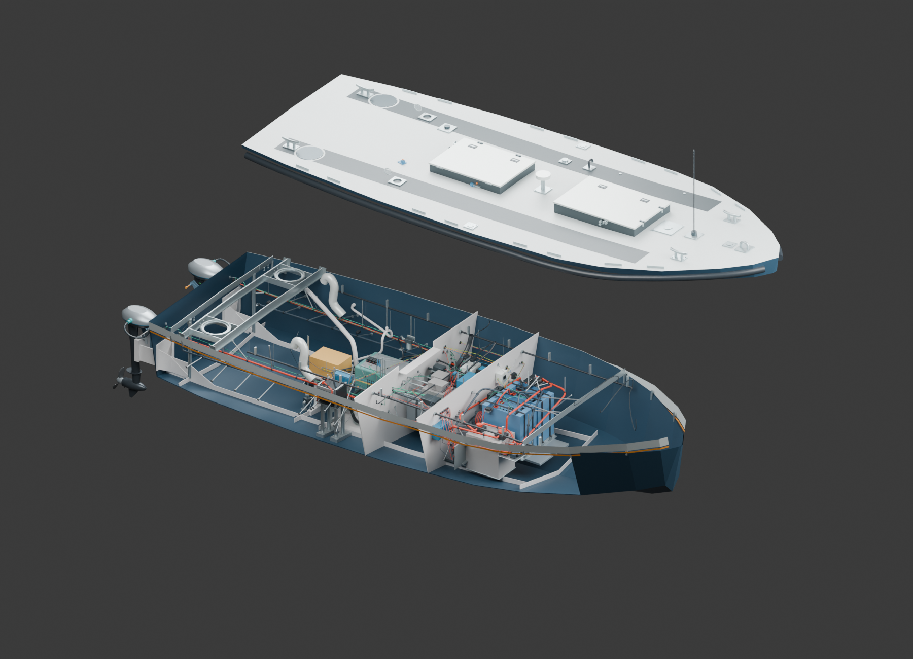
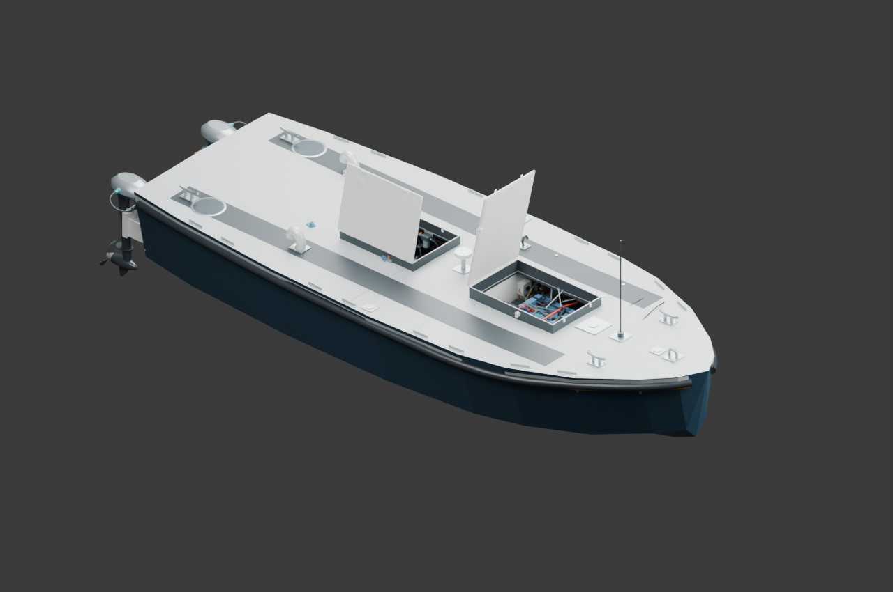

左侧是船尾，右侧是船头。甲板整体移开、近侧舷板局部剖去，仅为显示内部，不代表实船甲板可以整块拆开。
主要安装模型基本完成。满油预算约1273.9 kg，重心高度约0.489 m。部分真实接口、控制软件与实机条件尚未确认；摄像头/雷达保持暂停。拆解展示姿态不能用于重心计算。
能源、动力与排水是不同的系统
动力电池 → 两台电动推进器 → 螺旋桨推水。柴油 → 机组 → 充电器 → 给电池补电。船外冷却水经海底阀和滤器进入机组；船舱积水则由另一台舱底泵排出。
船壳、船底、艏艉结构
排开水产生浮力，承受水压和外力，包住船内设备
船壳不是只追求厚重；强度、重量和重心必须一起考虑纵骨、横框、舱壁、甲板梁格
防止船底和甲板大面积变形，把设备、人员和推进器载荷传进船体
舱壁分隔不同区域；不能仅凭外形把每道隔板都称为已验证水密舱壁甲板、机组舱盖、电池舱盖
供人员通行，挡雨浪，提供日常检修入口
密封条、压紧扣和铰链共同工作；开盖用撑杆/锁销支撑艉部局部检修口与加强圈
从甲板接近系缆座/艉部紧固件，伸手和工具进去
加强圈与梁格补偿开孔后局部刚度损失两台 Navy 6.0 Evo 电动推进器
螺旋桨向后推水，推动船前进；反转用于倒车和制动
两台候选额定电输入各 6 kW。船以左右推力差转向；一侧多推、另一侧少推或反推会产生转向力矩。不是柴油机直接带桨，也不能把 12 kW 换算成一个已验证航速艉座、肘板、连接纵骨
承受两台推进器重量、推力及反推力
将载荷传入骨架；外观贴合不等于焊接强度已经认证抬机机构、检修支撑与防脱插销
使推进器抬起后可检查/拆桨，并限制支撑意外脱开
50° 检修为已有设计工况；内部净距与真实锁止仍需核验，80° 拖运未关闭两块 E163 动力电池
储存推进与船载设备用电
两块并联保持约 51.2 V，容量合计 326 Ah、约 16.7 kWh 标称；这些是候选铭牌参数，不代表全部能量都能用完电池托盘、限位与压紧件
把重电池固定在较低位置，防止船运动时滑移
电池本体、支承和紧固件一起受力；运行中不允许靠线缆拉住电池柴油发电机组（Panda 5000i PMS 候选）
把柴油的化学能变成电能，给船上电气系统补充能源
通过原配电力电子单元和交流回路给充电设备供电；并非直接机械驱动两副桨，也未证明能持续抵消双机满功率耗电PMGi/原配功率转换单元
将机组原始电输出变为系统需要的交流电
图中“逆变器”按机组原配系统边界理解，不是额外无限功率电源动力电池充电器（25 A 候选）
把交流电变成受控直流电，为 E163 充电
与电池管理系统配合限流；充电器不是直接给每台推进器提供满推功率独立 12 V 启动电池
给柴油机起动机供短时大电流
与高压动力电池用途不同；独立维护充电器负责补电启动维护充电器
长期维持启动电池电量
当前 Blue Smart IP67 12/7 候选；线缆、支架与散热间距已布局油箱、加油口、通气管
储存柴油，允许加油及油箱随油量变化呼吸
通气出口不是排气管，也不是冷却排水口；三油况预算为 60/30/6 L燃油切断阀、粗滤器、输油泵、供回油管
控制燃油通断、滤除杂质、把油送入机组并让回油返回油箱
燃油滤杯是维护件；管嘴和实际泵能力仍须与选定实机匹配海底取水口与海底阀
从船外取冷却水；关阀可隔离船外水源
海底阀必须能可靠关闭，不能靠滤杯或快接代替总隔离冷却滤器、双快接、关阀机械联锁
滤掉水中杂物，方便拆洗；机械结构限制错误拆卸顺序
两个快接对应进、出水。低位运行是为了吸水条件，检修时才能按流程提起；快接不是“随便拔”机组冷却泵及机内换热通道
使冷却水流过机组相关换热部件，带走热量
机内部分按原厂总成处理；位置灯全绿不代表流量一定足够冷却联锁控制盒、8 个探头、4 只状态灯
识别阀芯、锁销、海底阀及运行位，形成过程许可；灯显示四个阀芯位置
LOGO 输入读取 PNP 探头，输出驱动灯；机组真实许可接口止于隔离端子，未猜针脚。普通 LOGO 不是安全 PLC，也没有因建模就自动具备已下载程序湿排气软管、水锁、鹅颈与贯舷出口
排走机组废气和伴随冷却水；水锁接纳停机回水，鹅颈降低外水倒灌风险
它处理机组排气，不负责把船舱积水排掉。机内真实关键边尚缺尺寸，600 mm 高差不能宣布实机满足舱底低点吸口、自吸排水泵、20→19 mm 接口
把机舱低处的少量积水抽到船外
与发动机冷却泵是两套系统。不是大破口进水时保证船不沉的设备舱底排水回环、防虹吸阀、通舷口
停泵后打断可能形成的虹吸，减少船外水反向进入
防虹吸阀需能拆洗；不能把它当永远不会堵的单向保证机舱通风筒、法兰和网罩
给机舱通风、为设备散热和机组进气提供通道
下端向机舱敞开是设计通风口，不是遗漏软管主配电柜、母排、保险和隔离开关
分配电力，隔离检修回路，限制故障影响范围
动力大电流回路与辅助小电流回路分开；保护配合仍受实际保险曲线和短路电流约束48→12 V、12→5 V、12→24 V 变换器
给不同电压的泵、控制器和传感器供电
低压设备不能直接接动力电池；专用正负回线已布局，船壳不当电源负线工控机
运行任务管理、感知处理、航线等高层软件
目前是安装与供电布局，不代表自主驾驶软件已经完成飞控/控制器
根据航向、速度等反馈执行控制逻辑
需要真实推进器接口与反馈；不能把两端画一根线就当控制协议已接通GNSS 接收机与定位天线
提供位置、速度等导航信息
天线需要合适视野；单天线不等同双天线航向测量系统遥控接收机、遥测电台和通信天线
接收人工控制、把状态数据传回岸上
人工接管链路与普通数据链用途不同，抗干扰和失联响应未由模型证明网络交换机、视频编码器及信号束
连接船内数据设备、汇集网络或视频数据
当前外部路径已有，确切端口和针脚仍须设备接口表独立停机接收/许可模块
为外部停机或许可控制预留设备与回路
真实原厂停机接口未完全闭合；不能当作已认证的应急停机系统。未重新加回用户要求删除的甲板按钮护舷条、艏艉系缆桩、背板
靠泊时缓冲接触、固定缆绳、把缆绳拉力分散到结构
收缆通道和天线间距应保留，不能让绳索扫过设备线夹、管夹、支架、穿舱套和密封件
固定管线，减少振动、磨损和穿舱处渗水
这些不起眼的小件决定安装可靠性；模型仍不是逐条焊缝/压接的施工详图摄像头与雷达
将来用于观察、感知和避障
按此前要求保持暂停/岸存状态，本轮没有重新安装；当前不能称为已具备 360° 视觉覆盖或完整雷达感知码头独立检修平台、量规和样板
给岸上检修定位、测量及接近推进器使用
属于岸上附件，不计入航行时船上载荷，也不是船体的一部分开盖查看

详细接线、原厂依据、核验表分别在03、04、05目录。原始依据中的历史参数不作为本版最新结果。